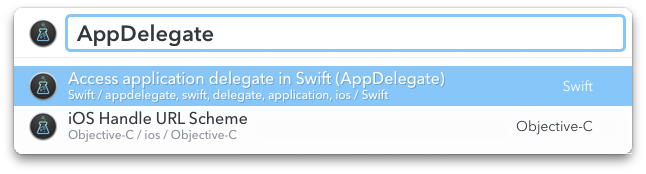

LaunchBar Stuff by Dominique Da Silva
My GitHub Repository of LaunchBar 6 Actions and Themes.
Search in SnippetsLab
Created
April 16, 2016
Updated
October 4, 2018
Live Search in SnippetsLab from Launchbar.

Press ALT to copy, click item to reveal in SnippetsLab
Download
Search SnippetsLab Action: SearchSnippetsLab.lbaction